Is there a Rhines-type excluded region in the CL spectra?
New: six matched deep-water mechanism tests.PV homogenization, inverse transfer and momentum-flux budgets for fixed-mean, quasilinear and full currents through 100 eddy times. QL mean-flow generation is supported; broad PV homogenization and a resolved curved spectral barrier are not established. Late fully nonlinear grid-scale accumulation is documented.
New: 4096 × 2048 deep-water pair to 1000 eddy times.Velocity above spatial spectra at 100, 300, 600 and 900 Te, with directional-transfer budgets. Strong upper-layer anisotropy develops; a resolved curved cascade bottleneck is not yet established. This is one matched seed pair with H = 2. The older H = 1 results and exploratory interpretations below are a separate campaign.
Deep-water waves: velocity above spectra
The physical target is the exponential deep-water Stokes profile: ∂zus = ¼e8z, giving ∂zzus = 2e8z. The comparison below uses existing 2048 × 512, Lx = 4, H = 1 runs. The larger-domain constant-gradient runs are separate mechanism controls; they do not establish the deep-water result at higher spectral resolution.
Top: horizontal Lagrangian velocity uL/u0 at 17 Te, seed 1, for deep-water waves (left) and its matched no-wave control (right). Bottom: kinetic-energy spectra averaged over eight seeds and six integer times, 15–20 Te. These are ensemble means, not the spectra of the single snapshot above. The dashed line marks z = −0.5; both spectra use the same upper-half window. The lower quarter of that window is tapered with a sine-squared ramp, followed by even/odd reflection of the collocated velocities. Energy is corrected by the mean squared taper. No zero padding or spectral smoothing is used in this new panel. The two spectra share a common maximum and a logarithmic scale spanning three decades; the pale ℓ = 0 band is also present in the control and should not be read as evidence for wave-induced exclusion. Vertical bin spacing is 1 cycle per original unit length, so the coarse vertical structure remains visible. Velocity colours span −3 to +3, with saturated extremes. These are replotted existing outputs, not new simulations.
A 2D study of where the inverse cascade can and cannot put energy when the Craik–Leibovich (CL) vortex force supplies an effective β, βeff=∂zzus, compared with the classic β-plane picture (Vallis 2017, Figs 12.3–12.4). All runs are 2D (x–z) CL in Oceananigans: periodic in x with Lx=4, free-slip walls at z=−1 and the surface z=0, 2048×512 grid, WENO-9 implicit LES, prognostic Lagrangian-mean velocity. The initial condition is a narrow Vallis ring at 27 cycles with rb=1/9, which keeps the same u0 and Rhines scale (≈9 cycles) as the 9-cycle runs on the parent page but starts the eddies three times smaller, leaving room for an inverse cascade. Te below is the eddy time of this 27-cycle ring.
profile
βeff(z)
deep water (Wagner–Craig “deep”)
2e8z
uniform β
½
slower decay
∝e2z, e4z (equal to ½ at z=−0.17)
no waves
0
Long runs (seed 1) go to 3000 Te. An ensemble of 8 random realizations of the initial ring (“seeds”: same ring spectrum, different random phases) was run for deep water, uniform β and no waves to 100 Te with output every Te. Spectra are of the y-mean (u,w), reflected evenly/oddly about the walls; deep-water spectra use the jet layer z>−0.5 (bottom quarter tapered, zero-padded in z for display).
Earlier spectral analysis
The excluded region is there, as a transient during the inverse cascade. At 15–20 Te the ensemble-mean spectra of both wave cases show a dumbbell-shaped hole bounded by κ=κR|cosθ|3/5, with energy reaching small k only along the kz axis. The no-wave control fills in isotropically.
Late times: energy is confined to a narrow band around kx=0. Uniform β keeps two clean empty lobes; in deep water the lobes are partly filled.
Jets in u come much later than the spectral signature. At 35 Te none of the three cases has visible bands (1.3–1.5% of u-energy at kx=0 in all three, 8-seed mean); bands are clear after several hundred Te.
Why deep water is less clean: βeff=2e8z changes by ≈60% over one Rhines wavelength, so a single spectrum mixes dumbbells of different sizes, and below z≈−0.5 (β≈0) the flow is ordinary 2D turbulence (vortices and a bottom current). Scaling kx at each depth by the local Rhines wavenumber collapses the spectra when β varies slowly: the energy fraction at kx≤0.5kβ(z) is 0.997 (uniform β), 0.99 (e2z), 0.98 (e4z), 0.97 (deep, spread 0.89–0.99 with depth) and 0.81 (no waves, no collapse).
Measure jets carefully: the strict x-mean misses slowly tilted bands: final jet fraction is 0.68 in deep water (surface jets plus a bottom current) but 0.06 for uniform β, whose bands carry 47% of the energy at the box scale kx=0.25.
Vallis-style figures
Top: energy in (kx,kz), shades at 0.05, 0.15, 0.35, 0.65 of the maximum; the right panel is zoomed and on a log grey scale (10−3–1). Left and middle: mean of 8 seeds; right: seed 1, averaged over 800–1000 Te. Red dashed: κ=κR|cosθ|3/5, κR=(|β|/𝒯1/3)3/5 (constant-flux estimate), with the transfer rate estimated as 𝒯=ũ3κe (ũ=(2KE)1/2, κe the energy-weighted mean |k| of the panel); κR≈7.2–7.5 cycles early and ≈10 cycles late. Bottom: u/u0 for seed 1, 0<x<2.
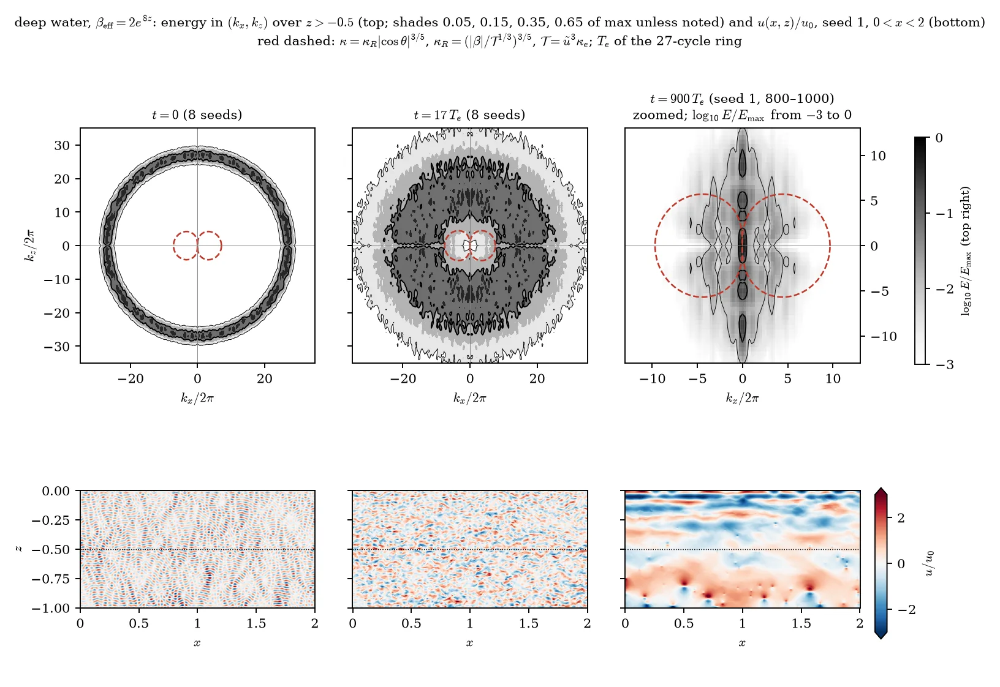
Deep water, βeff=2e8z (spectra over z>−0.5, marked by the dotted line).
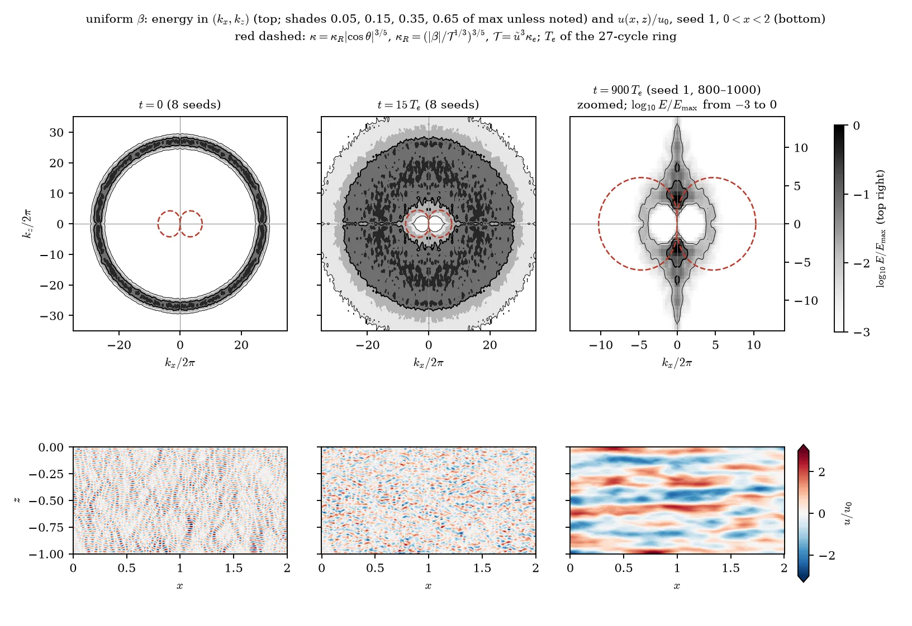
Uniform β=½: the textbook case.
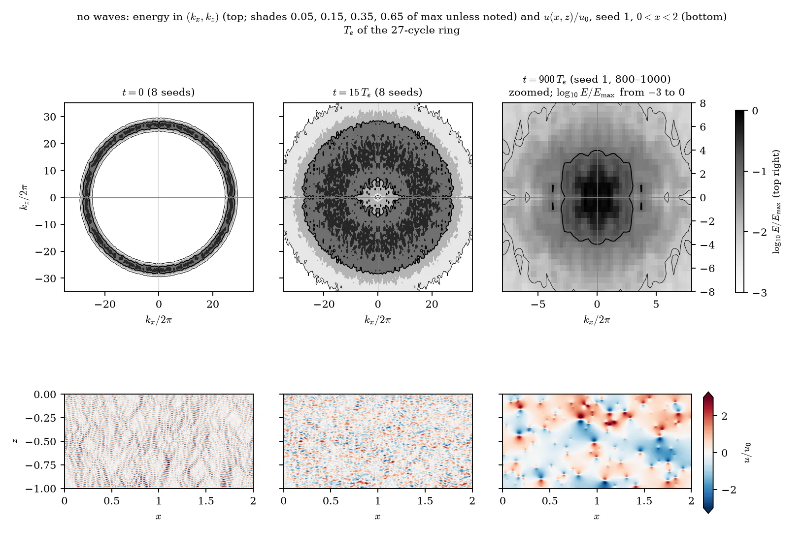
No waves (control). The late u panel looks banded only because u=−∂zψ of a depth-filling cell changes sign across its centre; the full box (below) is a patchwork of large cells and coherent vortices, with 2.4% of the energy at kx=0.
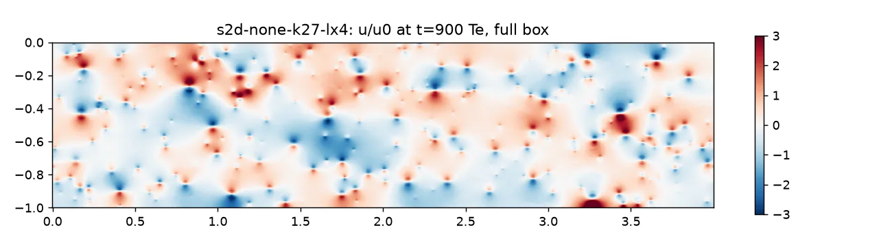
No waves, u/u0 at 900 Te over the whole box: decaying 2D turbulence, not zonal flow.
Time sequence of the spectra
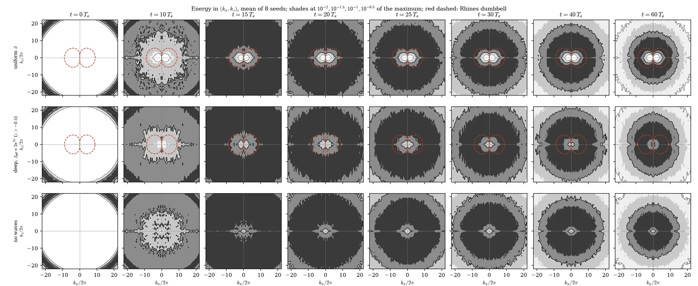
8-seed mean spectra at 0–60 Te (rows: uniform β, deep water z>−0.5, no waves); shades at 10−2–10−0.5 of each panel’s maximum; red dashed: fixed-velocity Rhines curve kβ|cosθ|1/2 used in this earlier version.
When do jets appear?
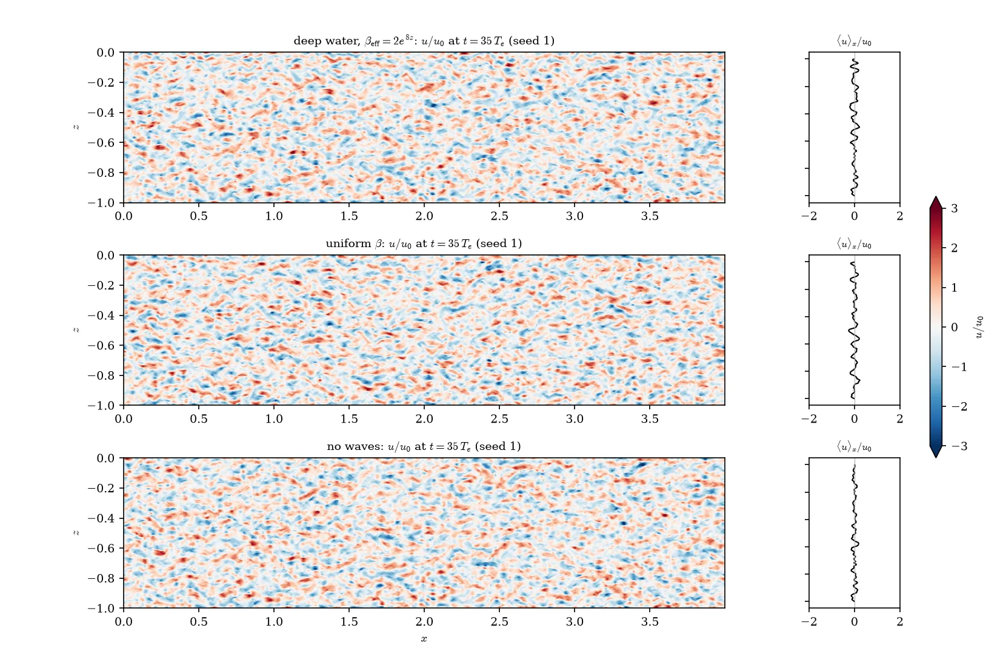
u/u0 at 35 Te (seed 1, full box) with ⟨u⟩x: no bands yet in any case.
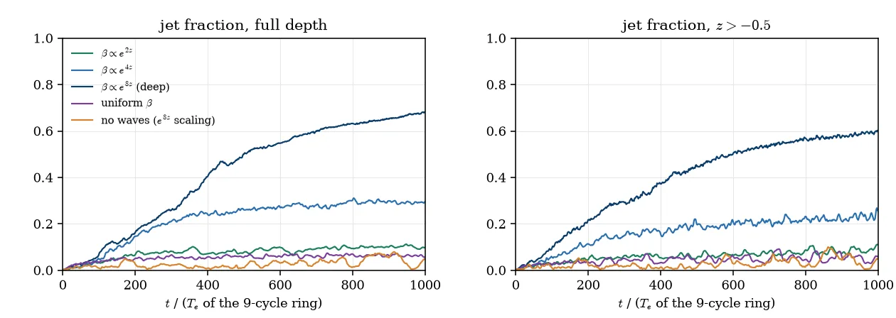
Jet fraction ½⟨UL2⟩/KE (strict x-mean) vs time, all 27-cycle profiles, full depth and z>−0.5; time in Te of the 9-cycle ring (×3 for the 27-cycle Te).
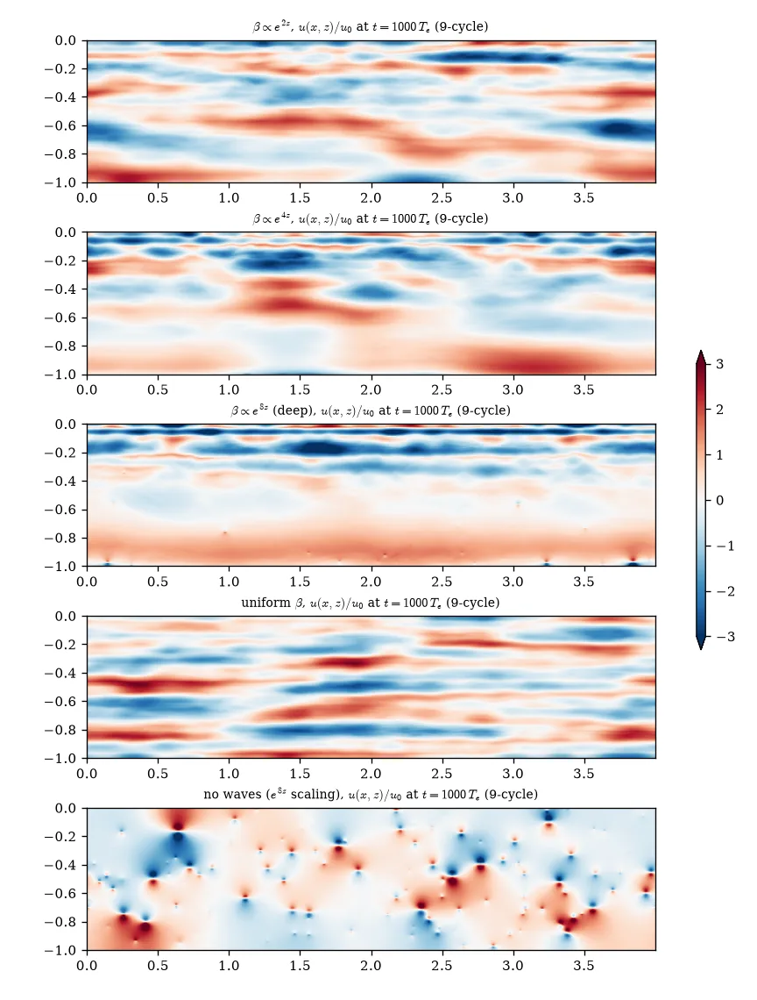
u/u0 at the end of each long run (3000 Te).
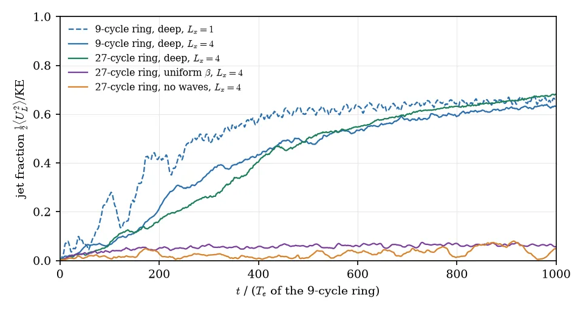
Jet fraction vs time including the 9-cycle ring at Lx=1 and 4 (these agree once run long enough).
Depth-varying β and the local Rhines scale
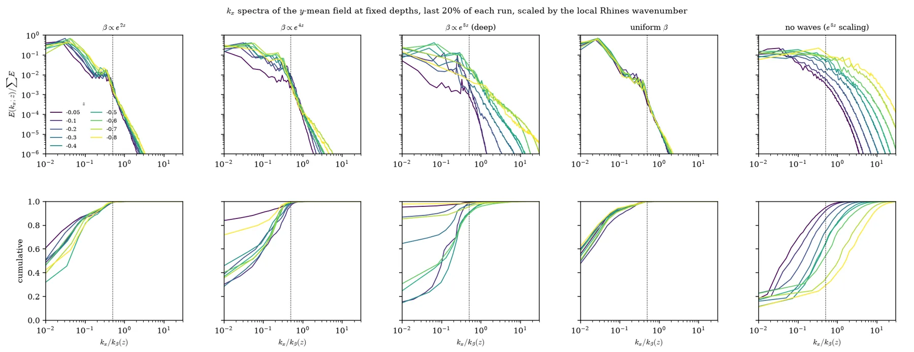
kx spectra of the y-mean field at nine depths, scaled by the local kβ(z)=(β(z)/ũ(z))1/2/2π (last 20% of each run); bottom: cumulative energy. Dotted: kx=0.5kβ.
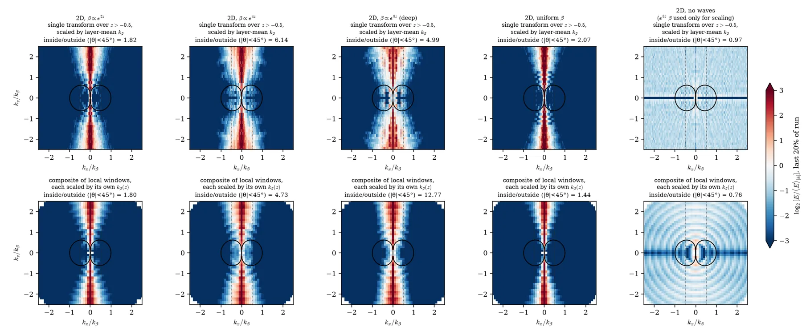
Annulus-normalized spectra log2[E/⟨E⟩|k|], last 20% of each run. Top: one transform over z>−0.5 scaled by the layer-mean kβ; bottom: composite of depth windows each scaled by its own kβ(z). The inside/outside numbers printed on the panels are not a reliable dumbbell test (see the parent discussion); read the pictures.
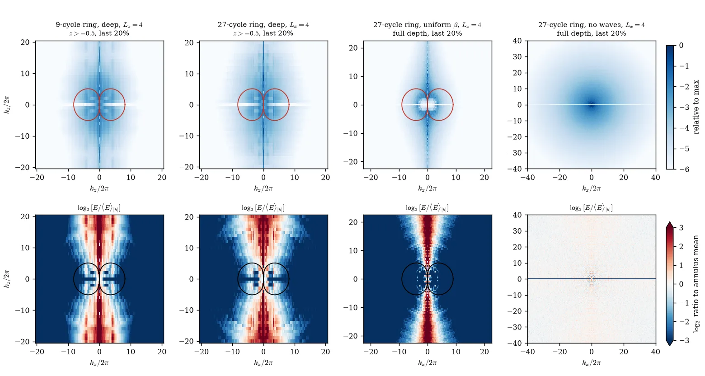
Late-time (last 20%) spectra, log and annulus-normalized, for the 9- and 27-cycle rings.
Caveats
2D and decaying: the excluded region is a transient of the inverse cascade, and κR uses a dimensional estimate of 𝒯 rather than a measured flux.
Late-time panels are a single realization; the ensemble stops at 100 Te.
The deep-water bottom layer (β≈0) develops a 2D condensate that does not occur in 3D (see the 3D results on the parent page).